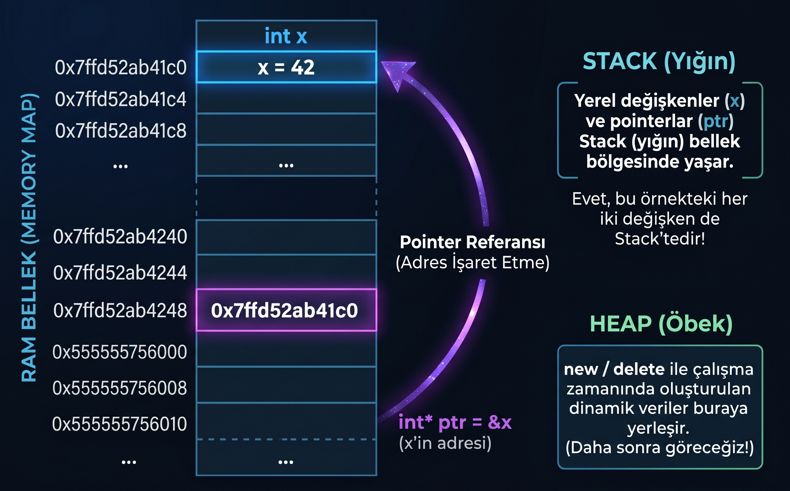

İşaretçi (Pointer) Nedir?
C ve C++'ın en güçlü silahı. Bir değişkenin değerini değil, doğrudan RAM'deki fiziksel adresini tutan özel değişkenlerdir.
#include <iostream>
using namespace std;
int main() {
int x = 5;
int* referans = &x; // & (Adres Operatörü): x'in RAM adresini çeker
cout << "x'in Degeri : " << x << endl; // 5
cout << "x'in RAM Adresi : " << &x << endl; // 0x7ffd...
cout << "Pointer'in Tuttugu : " << referans << endl; // 0x7ffd...
return 0;
}
İki Kritik Operatör: & ve *
Pointer mantığını kavramanın anahtarı bu iki sembolün ne yaptığını ayırt etmektir.
& (Adres Operatörü)
Bir değişkenin başına koyulduğunda: "Bana bu değişkenin RAM'deki hafıza adresini ver" demektir.
* (İçerik / Dereference)
Pointer'ın başına koyulduğunda: "Adrese git ve o adresin içindeki kutuda saklanan değeri oku/değiştir" demektir.
&x bir evin posta adresidir (Örn: Çankaya Mah. No: 5).
*referans ise o adrese gidip kapıyı açıp içeride oturan kişiyle görüşmektir.
Adres Üzerinden Değer Yönetimi
Pointer aracılığıyla bir değişkenin orijinal değerini doğrudan hafızadan manipüle edebiliriz.
#include <iostream>
using namespace std;
int main() {
int x = 5;
int* referans = &x;
cout << "Ilk Deger x : " << x << endl; // 5
// Orijinal x'e dokunmadan, adresi uzerinden degeri 50 yapiyoruz:
*referans = 50;
cout << "Guncel Deger x : " << x << endl; // 50 !
cout << "*referans : " << *referans << endl; // 50 !
return 0;
}RAM üzerindeki bir değişkenin adresi tektir ve sabittir. Elinizde o adres olduğu sürece değişken hangi fonksiyonun veya scope'un içinde olursa olsun doğrudan o bellek hücresini güncelleyebilirsiniz.
Call by Value: Değer Kopyalama
Varsayılan parametre aktarımıdır. Fonksiyona değişkenin aslı değil, RAM'de sıfırdan üretilen geçici bir kopyası gider.
void degerDegistir1(int a, int b) {
int gecici = a;
a = b;
b = gecici;
cout << "Fonk Icinde -> a: " << a << " b: " << b << endl;
}
int main() {
int a = 5, b = 10;
degerDegistir1(a, b);
// main içindeki orijinaller DEĞİŞMEDİ!
cout << "Main Icinde -> a: " << a << " b: " << b << endl;
return 0;
}Fonk Icinde -> a: 10 b: 5
Main Icinde -> a: 5 b: 10 (Değişmedi!)
Call by Reference: Adres Gönderimi (Swap)
Fonksiyon parametre olarak pointer (int*) bekler; çağıran taraf ise değişkenin adresini (&a) gönderir.
void degerDegistir2(int* a, int* b) {
int gecici = *a;
*a = *b; // a adresindeki degeri b adresindekiyle degistir
*b = gecici;
}
int main() {
int a = 5, b = 10;
degerDegistir2(&a, &b); // Adreslerini veriyoruz!
// main içindeki orijinal değişkenler yer değiştirdi!
cout << "Main Icinde -> a: " << a << " b: " << b << endl;
return 0;
}Main Icinde -> a: 10 b: 5 (Başarıyla Değişti!)
Stack Bellekte Neler Oldu?
İki yöntemin çağrı anındaki Stack çerçevesi (Call Stack) farkı.
❌ Call by Value (Klon Stack)
kopya_a = 10;
kopya_b = 5;
(Fonksiyon bitince silinir!)
a = 5;
b = 10;
✔️ Call by Reference (Adres Bağlantısı)
ptr_a = 0x7ffd20 ➔
ptr_b = 0x7ffd24 ➔
0x7ffd20: a = 10; (Güncellendi)
0x7ffd24: b = 5; (Güncellendi)
Dizi İsmi: Gizli Bir Pointer
C++'ta bir dizinin adı, aslında o dizinin ilk elemanının bellekteki adresini tutan sabit bir pointer'dır.
int sayilar[3] = { 10, 20, 30 };
// Bu iki ifade RAM'de TAMAMEN AYNI adresi gosterir:
cout << "sayilar : " << sayilar << endl; // 0x61fe10
cout << "&sayilar[0] : " << &sayilar[0] << endl; // 0x61fe10
// Dizinin baslangicini doğrudan bir pointer'a atayabiliriz:
int* ptr = sayilar;
cout << "*ptr (1. Eleman) : " << *ptr << endl; // 102. haftada gördüğümüz "Diziler fonksiyona gönderildiğinde kopyalanmaz, aslı değişir" kuralının nedeni budur. Çünkü fonksiyona dizi yolladığınızda aslında sadece ilk elemanın pointer'ını göndermiş olursunuz!
Pointer Aritmetiği: ptr + 1 Kaç Byte Atlar?
Pointer'ı 1 artırmak sayısal olarak 1 eklemez; işaret ettiği veri tipinin boyutu (sizeof) kadar bayt ileri zıplatır.
int sayilar[3] = { 10, 20, 30 };
int* ptr = sayilar;
cout << *ptr << endl; // 10
ptr++; // Adres 4 byte ilerledi!
cout << *ptr << endl; // 20
// Köşeli parantezin arkasındaki sır:
// sayilar[i] aslında derleyici tarafından *(sayilar + i) yapılır!
cout << *(sayilar + 2) << endl; // 30 (sayilar[2] ile özdeştir)Karakter Dizileri & char* Pointer
Karakter işaretçileri bellekte '\0' (null) karakter görene kadar peş peşe okumaya devam eder.
const char* metin = "IEEE";
// cout int* görünce adres basar, ancak char* görünce metni sonuna kadar basar!
cout << metin << endl; // "IEEE"
cout << *metin << endl; // 'I' (İlk harf)
cout << *(metin + 1) << endl; // 'E' (İkinci harf)Dönüş Tipi Pointer Olan Fonksiyonlar
Fonksiyonlar hesapladıkları bir değer yerine, bellekte var olan bir elemanın adresini dönebilirler.
// Dizideki en büyük elemanın DEĞERİNİ değil, ADRESİNİ dönen fonksiyon:
int* enBuyukAdresiBul(int dizi[], int boyut) {
int* maxPtr = &dizi[0];
for (int i = 1; i < boyut; i++) {
if (dizi[i] > *maxPtr) {
maxPtr = &dizi[i];
}
}
return maxPtr; // En büyük elemanın RAM adresi döner
}
int main() {
int skorlar[4] = { 45, 82, 19, 94 };
int* sampiyon = enBuyukAdresiBul(skorlar, 4);
cout << "En Yuksek Skor : " << *sampiyon << endl; // 94
// Doğrudan şampiyonun skorunu adres üzerinden güncelleyebiliriz:
*sampiyon = 100;
cout << "Yeni Skor : " << skorlar[3] << endl; // 100 oldu!
return 0;
}⚠️ Kritik Tehlike: Dangling Pointer
Fonksiyon içinde tanımlanmış yerel (local) bir değişkenin adresini asla dışarıya döndürmeyin!
int* hataliFonksiyon() {
int x = 42; // Local değişken (Stack'te yaşar)
return &x; // ❌ BÜYÜK HATA! Fonksiyon bittiği an x yok olur!
}
int main() {
int* tehlikeliPtr = hataliFonksiyon();
// tehlikeliPtr artık ölmüş/boşaltılmış bir bellek bölgesini gösterir (Dangling Pointer)
// *tehlikeliPtr okumaya kalktığınızda program çökebilir (Segmentation Fault)
return 0;
}
Bir fonksiyondan pointer döndürecekseniz, o pointer ya dışarıdan parametre olarak gelmiş bir bellek adresi olmalıdır ya da 4. ve 5. haftada göreceğimiz dinamik bellek (new) ile Heap üzerinde tahsis edilmiş olmalıdır.